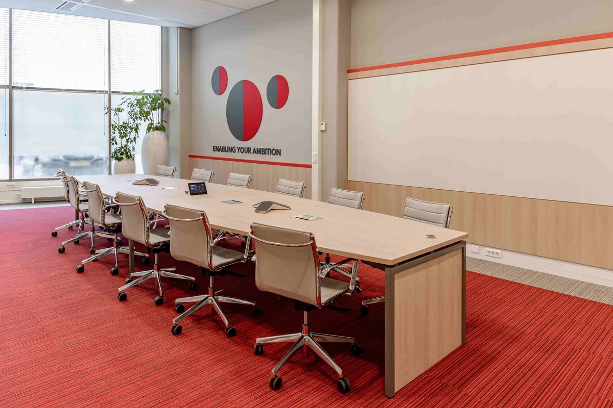

Vergaderruimte inrichten
Vergaderruimte inrichten: 7 keuzes die het verschil maken

Een vergaderruimte lijkt op het eerste gezicht vrij eenvoudig in te richten.
Een tafel, voldoende stoelen, een scherm aan de wand en klaar.
Toch zijn het juist deze ruimtes waar kleine keuzes veel invloed hebben op het dagelijks gebruik. Een tafel die te groot is, slechte verstaanbaarheid, hinderlijke reflecties op het scherm of een camera die maar de helft van de deelnemers goed in beeld krijgt, merk je iedere vergadering opnieuw.
Daarom begin ik bij het inrichten van een vergaderruimte niet met de tafel of de kleur op de wand.
Ik begin met de vraag:
Wat moet er in deze ruimte kunnen gebeuren?
Wordt de ruimte vooral gebruikt voor intern overleg, klantgesprekken, presentaties of hybride vergaderingen? En zitten er meestal vier mensen of juist tien?
Als dat duidelijk is, worden de andere keuzes een stuk logischer.
1. Bepaal eerst waarvoor de vergaderruimte wordt gebruikt
Niet iedere vergaderruimte hoeft hetzelfde te kunnen.
Een ruimte voor een kort overleg met vier collega's vraagt iets anders dan een directiekamer waar gesprekken twee uur duren. En een ruimte waarin dagelijks hybride wordt vergaderd heeft andere eisen dan een kamer die vooral wordt gebruikt voor gesprekken met klanten.
Ik kijk daarom eerst naar vragen als:
- Hoeveel mensen gebruiken de ruimte meestal?
- Wat is de maximale groepsgrootte?
- Hoe lang duren vergaderingen gemiddeld?
- Wordt er veel online vergaderd?
- Worden er presentaties gegeven?
- Zijn gesprekken vertrouwelijk?
- Worden klanten of andere externe bezoekers ontvangen?
- Wordt de ruimte ook gebruikt voor brainstormsessies of projectoverleg?
Een ruimte voor acht personen hoeft niet automatisch een traditionele vergadertafel met acht identieke stoelen te krijgen.
Misschien wordt de ruimte veel vaker gebruikt door drie of vier mensen. Dan kan een andere tafelvorm of een flexibelere inrichting veel prettiger werken.
Ontwerp dus voor het dagelijkse gebruik en niet alleen voor het maximale aantal stoelen dat in de ruimte past.
2. Kies de juiste maat en vorm van de vergadertafel
De vergadertafel bepaalt voor een groot deel hoe de ruimte wordt gebruikt.
Niet alleen het aantal personen is belangrijk, ook de vorm van de tafel heeft invloed.
Een rechthoekige tafel
Werkt goed in traditionele vergaderruimtes, presentatieruimtes en ruimtes waar een duidelijke voorzijde met beeldscherm aanwezig is.
Een ovale tafel
Heeft een zachtere uitstraling en maakt het vaak gemakkelijker om elkaar te zien. In een representatieve vergaderruimte kan dit een mooie tussenoplossing zijn.
Een ronde tafel
Past goed bij kleinere groepen en gesprekken waarbij gelijkwaardigheid en interactie belangrijk zijn. Er is minder sprake van een duidelijke kop van de tafel.
Een hoge tafel
Kan interessant zijn voor kort overleg, projectbesprekingen of een informelere ruimte. Voor langdurige vergaderingen zou ik deze minder snel als enige oplossing kiezen.
De beschikbare ruimte rondom de tafel is minstens zo belangrijk als de tafel zelf.
Stoelen moeten gemakkelijk naar achteren kunnen, deelnemers moeten langs elkaar kunnen lopen en de deur moet normaal bereikbaar blijven.
Daarom bepaal ik eerst de benodigde bewegingsruimte en pas daarna welke tafelmaat werkelijk past.
Een grote tafel in een kleine ruimte oogt misschien indrukwekkend op een plattegrond, maar werkt in de praktijk vaak onprettig.
3. Zorg dat iedereen elkaar goed kan zien en verstaan
Akoestiek wordt bij een vergaderruimte nog regelmatig onderschat.
Een ruimte met veel glas, harde wanden en een harde vloer kan er strak uitzien, maar gesprekken worden vermoeiend wanneer er veel galm ontstaat.
Zeker bij hybride vergaderingen wordt dat snel merkbaar.
De microfoon vangt namelijk niet alleen stemmen op, maar ook reflecties en achtergrondgeluid. Digitale vergadersystemen kunnen inmiddels veel corrigeren, bijvoorbeeld door achtergrondgeluid en echo te verminderen, maar een goede ruimteakoestiek blijft de basis.
Denk daarom aan:
- een akoestisch plafond
- absorberende wandpanelen
- vloerbedekking of tapijttegels
- gordijnen waar dat past
- gestoffeerde stoelen
- akoestische wandafwerking
Maar let op:
akoestiek in de ruimte en geluidsisolatie tussen ruimtes zijn twee verschillende dingen.
Een mooi akoestisch wandpaneel vermindert galm, maar voorkomt niet automatisch dat een vertrouwelijk gesprek in de gang te horen is.
Voor HR, directie, medische gesprekken of andere vertrouwelijke overleggen moet daarom ook naar wanden, deuren, plafonds en aansluitingen worden gekeken.
4. Maak verlichting geschikt voor meerdere situaties
Een vergaderruimte wordt niet altijd op dezelfde manier gebruikt.
Tijdens een presentatie wil je misschien minder licht bij het scherm. Tijdens een brainstorm moet de ruimte juist helder en actief aanvoelen. Bij een klantgesprek mag het licht weer wat warmer en rustiger zijn.
Daarom kies ik liever niet voor één centrale plafondlamp die altijd hetzelfde doet.
Een goed lichtplan combineert bijvoorbeeld:
- algemene verlichting
- gericht licht boven de tafel
- indirecte of sfeerverlichting
- voldoende licht op gezichten voor online meetings
- aparte schakeling of dimbaarheid
Voor werkplekken binnen geldt tegenwoordig NEN-EN 12464-1:2021 als actuele Europese norm voor werkplekverlichting. Die kijkt niet alleen naar de hoeveelheid licht, maar ook naar visueel comfort, verblinding en de kwaliteit van de verlichting.
In de praktijk betekent dit dat je niet alleen naar luxwaarden moet kijken.
Ook belangrijk zijn:
- reflecties in beeldschermen
- contrasten tussen tafel, wand en scherm
- daglicht
- verblinding
- positie van armaturen
- licht op gezichten
Voor hybride vergaderen is dat laatste extra belangrijk. Een goede camera kan namelijk weinig met een gezicht dat donker is omdat iemand met zijn rug tegen een fel raam zit. Microsoft adviseert eveneens voldoende, goed geplaatste verlichting voor een goede videokwaliteit.
5. Ontwerp techniek direct mee
Een stopcontact op de verkeerde plek lijkt een klein detail.
Totdat iedere vergadering begint met verlengsnoeren en mensen die onder de tafel zoeken naar een aansluiting.
Techniek moet daarom vanaf het begin onderdeel zijn van het ontwerp.
Denk aan:
- stroomvoorziening in of nabij de tafel
- USB C aansluitingen waar nodig
- netwerkverbinding
- draadloos presenteren
- een scherm of meerdere schermen
- camera
- microfoons
- luidsprekers
- bediening die voor iedereen begrijpelijk is
Voor hybride vergaderen is vooral de combinatie van camera, microfoon, luidsprekers en scherm belangrijk.
Online deelnemers moeten niet het gevoel krijgen dat ze als toeschouwer naar een vergadering kijken.
Ze moeten de mensen in de ruimte kunnen zien én goed kunnen verstaan.
Bij kleine en middelgrote vergaderruimtes kan één goed gekozen camerasysteem voldoende zijn. Bij grotere ruimtes wordt de positie van camera's, microfoons en schermen steeds belangrijker. Microsoft adviseert bij Teams Rooms bijvoorbeeld meestal één of twee beeldschermen, afhankelijk van de ruimte en het gebruik.
Nog belangrijker is dat het systeem eenvoudig werkt.
Als medewerkers iedere vergadering vijf minuten nodig hebben om beeld en geluid aan de praat te krijgen, is de techniek niet goed ontworpen.
6. Kies stoelen op gebruik, niet alleen op uitstraling
Vergaderstoelen worden vaak gekozen omdat ze mooi bij de tafel passen.
Dat is begrijpelijk, maar zitcomfort verdient minstens zoveel aandacht.
Een stoel voor een overleg van twintig minuten kan anders zijn dan een stoel waarin regelmatig twee uur wordt vergaderd.
Bij langere vergaderingen kijk ik onder andere naar:
- ondersteuning van de rug
- zithoogte
- voldoende bewegingsvrijheid
- armleuningen waar gewenst
- stoffering
- formaat van de stoel in verhouding tot de ruimte
Ook de hoeveelheid ruimte die een stoel inneemt telt mee.
Een brede fauteuilachtige vergaderstoel kan comfortabel zijn, maar acht van zulke stoelen rond een relatief kleine tafel maken een ruimte snel vol.
Daarom bekijk ik tafel en stoelen altijd samen.
Comfort, uitstraling en bewegingsruimte moeten met elkaar in balans zijn.
7. Geef de ruimte een eigen karakter, maar houd het rustig
Een vergaderruimte mag best iets vertellen over het bedrijf.
Zeker wanneer er klanten worden ontvangen.
Dat betekent voor mij niet dat iedere wand vol moet met logo's of huisstijlkleuren.
Vaak werkt een subtielere vertaling beter.
Denk aan:
- materialen die aansluiten op de rest van het kantoor
- één herkenbare accentkleur
- een grafische wand
- zorgvuldig gekozen kunst
- signing
- een bijzondere lamp
- hout of andere warme materialen
- planten
- een maatwerkkast of presentatiewand
Zo krijgt de ruimte identiteit zonder dat deze onrustig wordt.
Ik kijk daarbij ook naar wat een camera ziet.
Bij hybride vergaderingen wordt de achtergrond onderdeel van de uitstraling van het bedrijf. Een rustige wand met een subtiel logo, hout of zorgvuldig gekozen materiaal werkt vaak beter dan een drukke achtergrond.
Ook planten kunnen hier iets toevoegen.
Niet omdat ze de vergaderruimte ineens gezonder maken, maar omdat ze harde materialen verzachten en een zakelijke ruimte wat vriendelijker kunnen laten aanvoelen.
Denk ook aan de positie van het scherm
Een scherm wordt vaak pas laat in het ontwerp toegevoegd.
Dat is eigenlijk te laat.
De positie van het scherm heeft namelijk invloed op:
- de richting van de tafel
- de positie van deelnemers
- de camera
- daglicht
- verlichting
- kabels en aansluitingen
Iedere deelnemer moet het scherm zonder ongemakkelijke draaiing kunnen zien.
Bij hybride vergaderingen komt daar nog iets bij.
Idealiter kijken deelnemers tijdens een gesprek ongeveer richting camera en scherm. Wanneer de camera ergens hoog in een hoek hangt terwijl online deelnemers op een andere wand te zien zijn, ontstaat nauwelijks oogcontact.
Daarom ontwerp ik techniek en indeling liever als één geheel.
Eén grote vergaderruimte of meerdere kleine?
Meer vierkante meters betekent niet automatisch een betere vergaderomgeving.
In veel kantoren zie ik dat één grote vergaderruimte voortdurend wordt gebruikt door twee of drie mensen.
Dat is niet altijd efficiënt.
Voor organisaties waar veel korte gesprekken, online meetings en overleg in kleine groepen plaatsvinden, kan een combinatie beter werken:
- één representatieve grotere vergaderruimte
- één of meerdere kleine overlegkamers
- belruimtes of pods
- informele overlegplekken
Zo hoeven twee collega's niet een ruimte voor twaalf personen te reserveren.
Het sluit ook beter aan bij hybride werken, waarbij een deel van de gesprekken met maar één of twee mensen fysiek in dezelfde ruimte plaatsvindt.
Vergeet privacy niet
Een glazen vergaderruimte kan mooi en ruimtelijk ogen.
Maar volledige transparantie is niet altijd gewenst.
Je kunt privacy bijvoorbeeld oplossen met:
- gedeeltelijke folie
- gordijnen
- strategisch geplaatste signing
- een gesloten wanddeel
- slimme positionering ten opzichte van de werkvloer
Bij vertrouwelijke gesprekken gaat privacy verder dan zicht.
Dan moet ook aandacht worden besteed aan de geluidsisolatie.
Zeker bij glazen systeemwanden en deuren is dat iets om al tijdens het ontwerp mee te nemen, niet nadat de ruimte in gebruik is genomen.
Hoe groot moet een vergaderruimte zijn?
Daar bestaat geen vaste maat voor die voor iedere situatie werkt.
Het hangt af van:
- aantal personen
- tafelvorm
- type stoelen
- gewenste loopruimte
- scherm en techniek
- deuren
- kasten
- toegankelijkheid
- functie van de ruimte
Daarom zou ik niet beginnen met een standaard aantal vierkante meters per persoon.
Een ruimte voor zes personen met een ronde tafel heeft een andere maatvoering nodig dan een ruimte voor zes personen met een lange tafel, beeldscherm en presentatiewand.
Ik teken liever eerst de opstelling en controleer daarna of mensen zich er prettig en veilig omheen kunnen bewegen.
Veelgestelde vragen over het inrichten van een vergaderruimte
Hoe richt je een goede vergaderruimte in?
Begin bij het gebruik. Bepaal hoeveel mensen de ruimte meestal gebruiken, welke soorten overleg er plaatsvinden en hoe vaak hybride wordt vergaderd. Stem daarna tafel, stoelen, akoestiek, verlichting en techniek op elkaar af.
Welke tafelvorm is het beste voor een vergaderruimte?
Dat hangt af van het aantal personen en het soort overleg. Een ronde tafel stimuleert interactie in kleinere groepen. Een ovale tafel combineert een zachte uitstraling met relatief veel zitplaatsen. Een rechthoekige tafel werkt goed bij presentaties en grotere groepen.
Hoe groot moet een vergaderruimte voor acht personen zijn?
Dat is niet alleen afhankelijk van het aantal personen. Tafelmaat, type stoelen, deuren, schermen en benodigde loopruimte spelen allemaal mee. Daarom is het verstandiger eerst een goede opstelling te tekenen dan uit te gaan van één vast aantal vierkante meters per persoon.
Hoe verbeter je de akoestiek in een vergaderruimte?
Gebruik voldoende absorberende oppervlakken, bijvoorbeeld een akoestisch plafond, wandpanelen, tapijt of gestoffeerde meubels. Bij veel glas en harde materialen is extra absorptie vaak nodig. Voor vertrouwelijkheid tussen ruimtes zijn daarnaast geluidsisolerende maatregelen nodig.
Welke verlichting is geschikt voor een vergaderruimte?
Gebruik bij voorkeur meerdere lichtbronnen en zorg dat verlichting dimbaar of afzonderlijk schakelbaar is. Vermijd reflecties in beeldschermen en zorg bij hybride vergaderen voor voldoende licht op gezichten.
Welke techniek heb je nodig voor hybride vergaderen?
Minimaal een goed beeldscherm, camera, microfoon en luidsprekers. De juiste oplossing hangt af van de grootte van de ruimte en het aantal deelnemers. Een stabiele netwerkverbinding en eenvoudige bediening zijn minstens zo belangrijk.
Waar plaats je het scherm in een vergaderruimte?
Plaats het scherm zo dat iedere deelnemer het zonder veel draaien kan zien. Houd rekening met daglicht en reflecties. Bij hybride vergaderen is het verstandig camera en scherm zo dicht mogelijk bij elkaars kijkrichting te plaatsen.
Welke stoelen zijn geschikt voor een vergaderruimte?
Voor korte vergaderingen kan een relatief eenvoudige stoel voldoende zijn. Wordt er vaak langer vergaderd, kies dan voor meer ondersteuning en zitcomfort. Houd ook rekening met de afmetingen van de stoel en de beschikbare ruimte rond de tafel.
Heb je verschillende soorten vergaderruimtes nodig?
Vaak wel. Als veel gesprekken met twee tot vier personen plaatsvinden, zijn kleine overlegkamers of pods praktischer dan alleen één grote vergaderruimte. Kijk naar het werkelijke gebruik voordat je het aantal en formaat van de ruimtes bepaalt.
Een vergaderruimte moet vooral goed werken
Een mooie vergaderruimte is prettig.
Maar uiteindelijk moet de ruimte vooral doen waarvoor hij bedoeld is.
Mensen moeten elkaar goed kunnen zien en verstaan. Het scherm moet zichtbaar zijn. Online deelnemers moeten kunnen meedoen. Stoelen moeten prettig zitten en vertrouwelijke gesprekken moeten ook echt vertrouwelijk kunnen blijven.
Pas daarna komen kleur, materiaal en uitstraling.
Voor mij is dat precies waar goed kantoorontwerp begint:
eerst zorgen dat de ruimte werkt, daarna zorgen dat alles ook als één geheel voelt.
Willen jullie een vergaderruimte opnieuw inrichten of meenemen in een groter kantoorontwerp? Dan kijk ik niet alleen naar tafel en stoelen, maar naar de complete ruimte, van indeling en akoestiek tot verlichting, techniek en uitstraling.
Bekijk hoe deze keuzes samenkomen in de praktijk: bekijk onze kantoorprojecten.